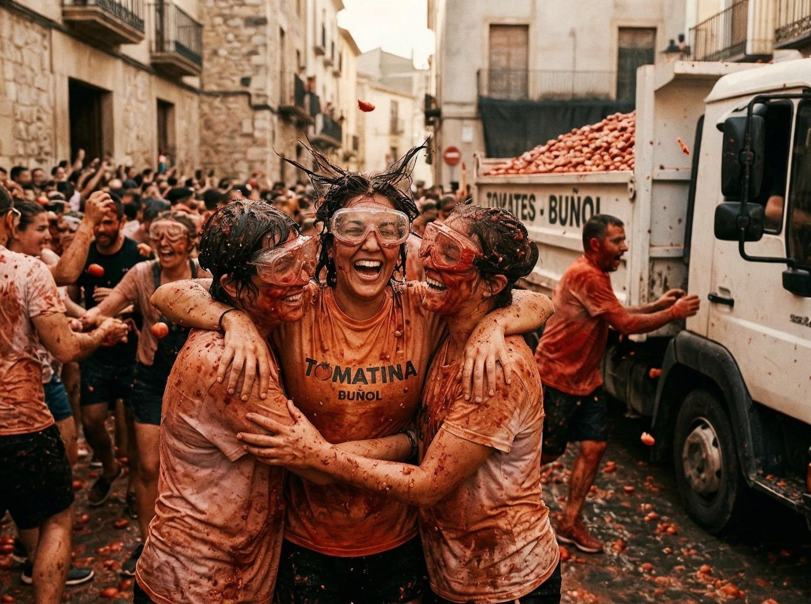
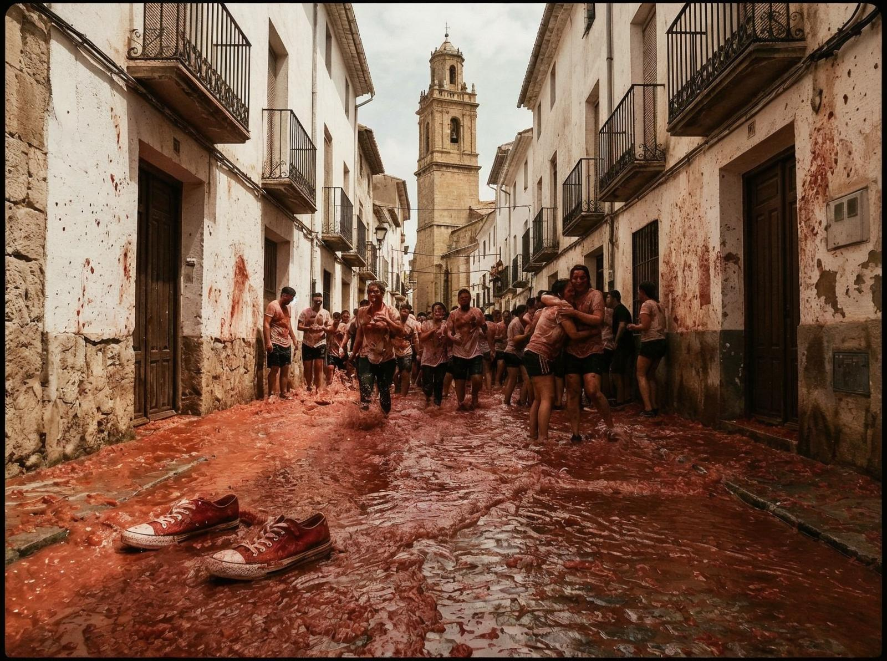

Dacă ai fi acolo acum, la ultima miercuri din august, ai vedea străzile Buñolului acoperite de roșii. Nu metaforic — literal. 120 de tone de roșii împrăștiate pe asfalt, 22.000 de oameni acoperiți de pulpă de roșii, o oră de haos organizat care transformă acest oraș spaniol de 9.000 de locuitori în capitala mondială a luptelor cu mâncare.
Festivalul începe în 1945, când un grup de tineri s-a luptat spontan cu roșii în timpul unei parade. Nu era plănuit, nu era aprobat, s-a întâmplat pur și simplu. Autoritățile au încercat să-l oprească de câteva ori, dar oamenii au continuat să vină. În 1957, festivalul a fost interzis, iar locuitorii au protestat organizând o înmormântare simbolică cu o coșciug mare de roșii. Autoritățile au cedat, iar La Tomatina a devenit oficial.
Ceea ce e interesant e că roșiile nu sunt de pe piață. Sunt roșii speciale — ieftine, excesive, nu tocmai bune pentru consum. Vin din Extremadura, o regiune cunoscută pentru producția de roșii, și sunt aduse special pentru festival. Nu sunt organice, nu sunt de înaltă calitate, sunt perfecte pentru a fi aruncate.

Mergi la Buñol în ziua festivalului și vezi oameni din toate colțurile lumii — spanioli, americani, japonezi, australieni, brazilieni. Toți veniți pentru același motiv: să fie acoperiți de roșii. Unii poartă ochelari de protecție, alții își lasă hainele acasă, alții poartă costume de baie. Totul e acceptabil, totul e parte din experiență.
Festivalul începe la ora 11, când cineva urcă pe un stâlp de lemn de două etale și încearcă să ia un șuncă de la vârf. Când șunca cade, începe lupta. Camioanele cu roșii intră în oraș, oamenii încep să arunce, și pentru o oră, Buñol devine un ocean roșu.
Există reguli, desigur. Nu poți arunce roșii întregi — trebuie să le strivești înainte. Nu poți arunce alte obiecte — doar roșii. Nu poți rupe tricouri. Dar în afara acestor reguli, e libertate totală. Oamenii aruncă roșii la vecini, la străini, la prieteni, la necunoscuți. Nu contează cine e — toți sunt ținte.

E genul de loc pe care îl înțelegi doar când ești acolo, când simți pulpă de roșii pe fața ta, când vezi străzile transformate în râu roșu, când auzi strigătele și râsetele a mii de oameni. La Tomatina nu e despre violență — e despre pură distracție, despre eliberare, despre a lăsa totul deoparte și a fi copil din nou.
Festivalurile convenționale arată altfel. La Tomatina nu e despre tradiție, e despre exces. E despre oameni care au găsit să se distreze în cel mai neconvențional mod posibil, care au creat ceva unic în lume, care continuă să atracă mii de oameni de optzeci de ani.
În 2025, sloganul festivalului a fost "Tomaterapia" — o metaforă pentru puterea de a te elibera prin absurd. Poate că nu e o terapie convențională, dar pentru o oră, 22.000 de oameni uită de problemele lor și se luptă cu roșii.
Chiar dacă n-ai să fii niciodată acolo, La Tomatina rămâne o demonstrație că oamenii pot găsi bucurie în cele mai neașteptate locuri — chiar într-un ocean de roșii în mijlocul Spaniei.